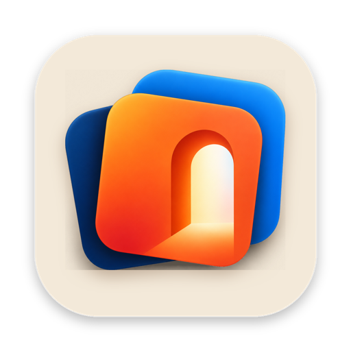
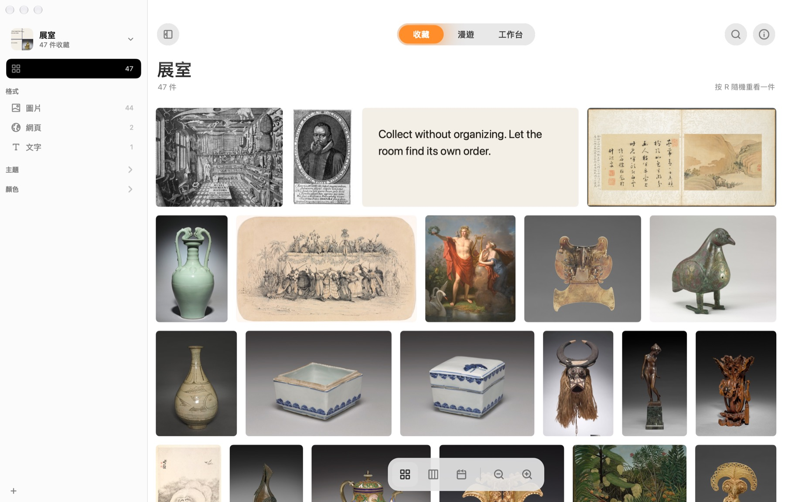

一眼看完全部。
格狀、瀑布、時間軸都能看。側欄自己長出格式、分類、主題和顏色。


Wunder.你 Mac 上的珍奇室。什麼都能收，什麼都不用整理。
下載 Mac 版免費 · 4 MB · macOS 14 以上 · 第一次打不開？

1這是什麼
圖片、連結、一段話、截圖、檔案。按 ⌘⇧C 就收進來，不用選資料夾，也不用取名字。
Wunder 會自己看：圖裡寫了什麼字、拍到什麼、是什麼顏色。所以就算從沒整理過，之後也找得回來。
2有什麼不同
資料夾要你先決定東西放哪，可是收的當下，你還不知道為什麼想留它。結果東西不是哪裡都沒放，就是到處都放。
Wunder 自己分類：依格式、種類、主題、顏色。它也會把舊東西帶回來，收過的不會就這樣躺著。
3怎麼用
4你會得到
格狀、瀑布、時間軸都能看。側欄自己長出格式、分類、主題和顏色。
一面會自己慢慢漂的牆。「今天的推薦」每天挑十二件你快忘了的，還告訴你為什麼。

依格式、分類、主題或顏色分堆，拖來拖去、畫線連起來，存三種排法隨時回來。

留下那些吸引你的東西。
| Wunder | 資料夾 | 書籤 | |
|---|---|---|---|
| 圖片、連結、文字、檔案放一起 | ✓ | 部分 | – |
| 不用分類、不用取名 | ✓ | – | – |
| 搜得到圖片裡的字 | ✓ | – | – |
| 會把舊東西帶回來 | ✓ | – | – |
| 留在你的 Mac 上 | ✓ | ✓ | – |
放在 Mac 上的一個地方，收那些不想弄丟、又不想整理的東西。圖片、網頁、文字、檔案都能收，它會看懂內容，幫你再找回來。
Wunder 還沒經過 Apple 公證，所以第一次會被擋。打開「系統設定 → 隱私權與安全性」，往下捲，按「強制打開」。只要做一次。
也可以在「終端機」執行：xattr -dr com.apple.quarantine /Applications/Wunder.app
不會。讀圖裡的字、認出拍到什麼、顏色、相似的圖、回答問題，全部用 Apple 內建的功能在你的 Mac 上完成。Wunder 只有三種時候會連網：讀取你收的網頁、下載描述搜尋用的模型（約 106 MB，只下載一次，可以不裝），還有檢查新版本。
不會。它記得檔案在哪裡，搬走了也追得到。想留一份備份的話，可以讓展室把每個檔案存進它自己的資料夾。
在展室打開同步，它就搬進 iCloud 雲碟，同一個 Apple 帳號的 Mac 都能打開。兩台同時改也沒關係，兩邊的修改都會留下。
macOS 14 Sonoma 以上的 Mac。對收藏提問需要 Apple Intelligence（macOS 26）。
免費。原始碼在 GitHub。
Mac 版免費下載，不用帳號，不用設定。
下載 Mac 版